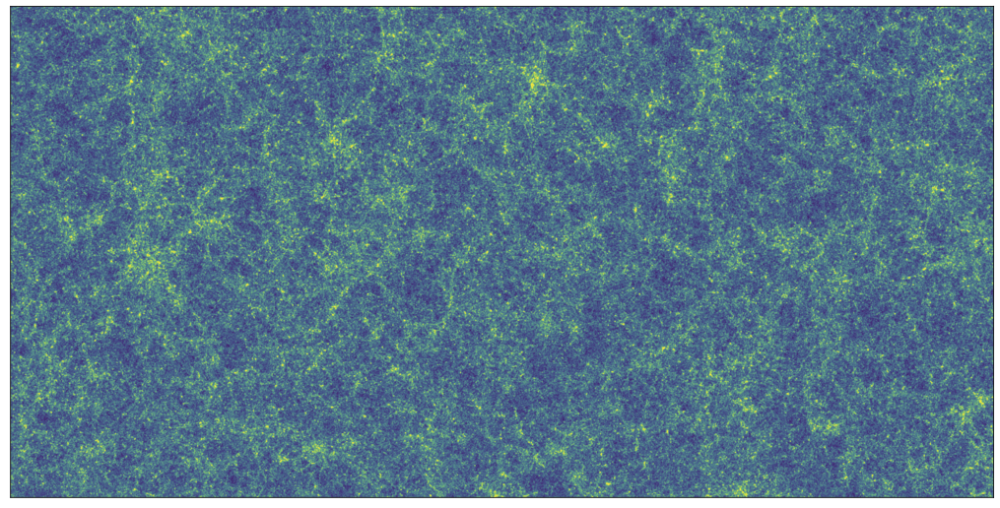
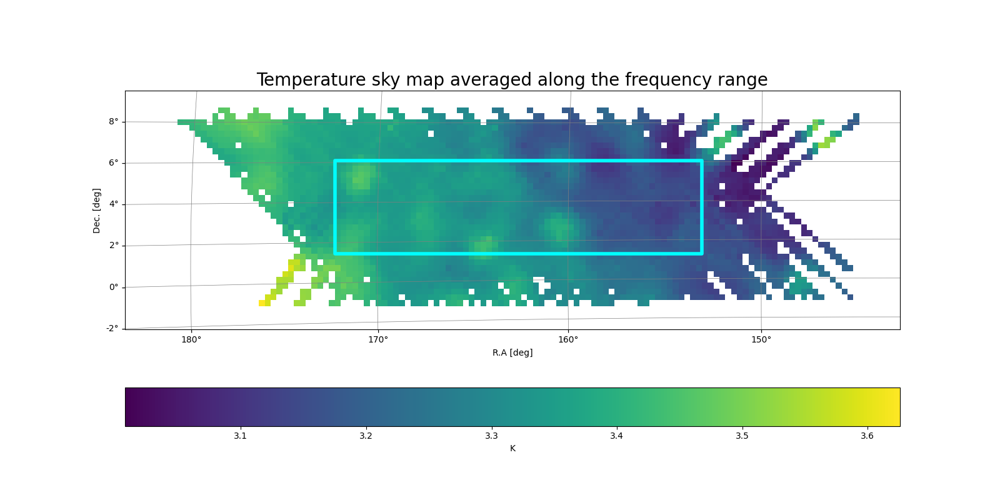
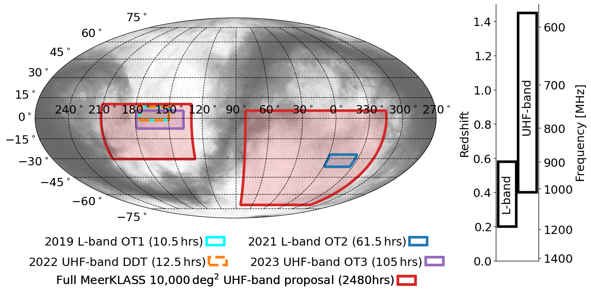

 MeerKAT Large Area Synoptic Survey
MeerKAT Large Area Synoptic Survey

In our first public data release, we publish the HI intensity mapping data cube produced from observations taken in 2019 by the MeerKAT telescope under proposals SCI-20180330-MS-01 and SCI-20190418-MS-01.
The observations covered a box spanning 153° < RA < 172° and -1° < DEC < 8° in fast scanning single-dish mode. The data was calibrated and processed into intensity maps following the description in Wang et al. 2021, and we release the HI intensity cubes after map-making accompanied by a jupyter notebook with basic data I/O. This data set formed the basis for the cross-correlation detection with the overlapping WiggleZ galaxy survey as reported in Cunnington, Li et al 2023 and Carucci et al 2025. No foregrounds have been removed from this data, however, the codes to partially reproduce the results in Carucci et al 2025 can be found here .
If you use this data in publications, please cite Wang et al 2021, Cunnington et al 2023 and Carucci et al 2025 for reference and also use the MeerKAT facility acknowledgement:
‘The MeerKAT telescope is operated by the South African Radio Astronomy Observatory, which is a facility of the National Research Foundation, an agency of the Department of Science, Technology and Innovation.’

In our second public data release, we publish our deepest to-date HI intensity mapping data cube produced from 84 hours of observations taken in 2021 by the MeerKAT telescope under proposals SCI-20210212-MS-01.
The observations covered a box spanning 330° < RA < 360° and -36° < DEC < -25° in fast scanning single-dish mode.
The data was calibrated and processed into intensity maps following the description in MeerKLASS collaboration et al. 2025, and we release the HI intensity cubes after map-making accompanied by a jupyter notebook with basic data I/O.
No foregrounds have been removed from this data, however, codes can be adapted from here .
We also reported a HI stacking detection in Chen et al 2023 .
If you use this data in publications, please cite MeerKLASS collaboration et al 2025 for reference and also use the MeerKAT facility acknowledgement:
‘The MeerKAT telescope is operated by the South African Radio Astronomy Observatory, which is a facility of the National Research Foundation, an agency of the Department of Science, Technology and Innovation.’
We show a map of our current observations in the map on the right. We have two fields with L-Band observations, and multiple on-going observations in the UHF band.
| Band | RA range | Dec range | Year |
| L-Band | 153 < RA < 172 | -1 < DEC < 8 | 2019 |
| L-Band | 330 < RA < 360 | -36 < DEC < -25 | 2021 |
| UHF-Band | 130 < RA < 165 | -8 < DEC < 5 | 2023 |
| UHF-Band | 150 < RA < 190 | -8 < DEC < 5 | 2023 |
